This post is a report on a final project I did in a music technology graduate seminar, MUMT-605, offered at McGill in the fall of 2015.
Fundamental frequency estimation
Fundamental frequency (f0) estimation (sometimes also called pitch detection, see Appendix A) has been an active topic of research within the field of audio signal processing for many years. Currently there exist literally hundreds of estimation methods that most do fairly well when the sound source is monophonic and noiseless but tend to differ greatly in accuracy when applied in less ideal situations [1, 4].
Given adequate data and labels supervised learning is a very interesting method to explore in the context of fundamental frequency estimation as it has the potential to combine the information gained from individual methods and use it to come up with a more precise estimate. It could learn which methods to trust under certain circumstances and which not to and then use the model that has been learned when it is predicting output frequencies for inputs that it hasn't seen before.
In this post I will discuss five f0 methods and their individual strengths and weaknesses. From there on I briefly introduce supervised machine learning and mention how concepts therein could be used to augment the performance of current estimation methods. I conclude with a case study.
Estimation methods
Fundamental frequency estimators can be split roughly into two categories: time domain based estimators (looking at the incoming waveform) and frequency domain based estimators (looking at the frequency spectrum) or sometimes the methods used are a combination of methods from both categories. Some authors also mention yet another category, probabilistic methods [1,5,11], but they are, not surprisingly, always a member of either or both time- or frequency domain categories.
Methods in both categories have their advantages and disadvantages. The time domain based estimators are exceedingly simple to understand and implement and are computationally cheap [1]. They however lack robustness when noise or polyphonic sounds are present in the input signal. The more up to date time domain estimators have been augmented to bring performance closer to human assessment of pitch [6,7,8]. On the other hand frequency domain methods tend to show more resilience to noise and some can even be used for polyphonic fundamental frequency estimation [8,9]. Frequency domain methods tend to be mathematically more involved and also computationally heavier than time-domain methods.
It is outside the scope of this report to give a thorough explanation of all fundamental frequency estimators. I will limit myself to a brief summary of five well known fundamental frequency estimation methods. Two of them, counting zero crossings and autocorrelation belong to the time domain category and the remaining methods belong to the frequency-domain category.
Time domain based estimators
Zero-crossing rate (ZCR) - Using the fact that fundamental frequency is the reciprocal of the longest repeating period in a signal we can count the times a signal crosses the time axis. The zero crossing patterns that emerge can then be used to estimate f0, that is we can count rising- or falling edge crossings and use the rate at which they occur to estimate the fundamental frequency.
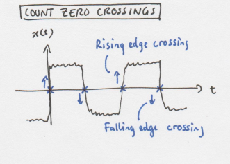
ZCR is computationally inexpensive and can be implemented in O(N) time complexity. It tends to do poorly when the signal has additional high-frequency components (as many real world signals do) because then there can exist multiple zero crossings per cycle. The effects of the high-frequency components can be mitigated by pre-processing the signal before applying the algorithm. This method is thus very sensitive to noise and fluctuations in instantaneous frequency [1].
Autocorrelation (AC) is a function of of how similar a signal is to a delayed version of itself [11]. Figuring out the position of the first peak in the AC (the shortest time lag where the signal repeats) can be used to estimate the period of the incoming wave.
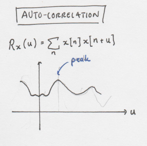
AC can be computed at O(N log(N)) and is a great method for finding the fundamental even when the incoming signal has strong harmonics, a missing fundamental or contains noise [6]. One drawback of the AC method is that it may erroneously choose a peak relating to a higher-order partial instead of the fundamental frequency. A method called YIN [7] was developed in 2002 to enhance the performance of AC and is now more commonly used than AC.
Frequency domain based estimators
Finding global peak in FFT (FFT): FFT is applied to a windowed input signal and the frequency bin containing the most energy is used to find the peak frequency. Some sort of of interpolation can also be used to get more precise result.
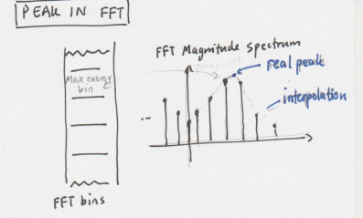
FFT can yield poor results when the fundamental frequency does not fall in a frequency bin which has the highest energy or is not present at all.
Harmonic product spectrum (HPS): A method based around the fact that many real world signals have frequency harmonics (the sinusoids above the fundamental) located at some real value multiple of the fundamental frequency. The frequency spectrum is found and under-sampled at integer values. These spectrums are then multiplied together. The frequency bin containing the peak of the multiplied signal is estimated to be the fundamental frequency, which makes sense since higher frequency harmonics are often in linear relationship with the fundamental frequency. For a better explanation please refer to [6].
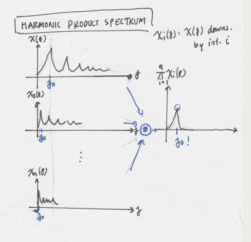
HPS works well for signals where there harmonics are in some linear relationship with the fundamental and can be implemented to perform in O(N log(N)) time. One shortcoming of this approach is that we have to know before hand approximately how many harmonic partials are in the input signal (how many times we should undersample the spectrum). If the signal contains a lot of low frequency noise, that can also distort the estimation.
Cepstrum (CEPS): First the complex cepstrum is calculated and then the sample corresponding to a peak within a sub-interval which is chosen so that it should contain the fundamental frequency. The location of the peak within the interval is then used to estimate the fundamental frequency. The clarinet for example has a frequency range of approx. 125Hz - 2K so at a sampling frequency of 44.1kHz we should search for the peak within the interval [22, 353] samples.
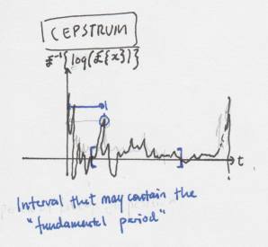
I found that CEPS works very well when the fundamental is low (440 Hz or lower in the case of the clarinet) but typically underestimates the fundamental when the incoming signal has higher frequency (800 Hz or higher in the case of the clarinet) [2].
Preprocessing the input signal
Most of the algorithms above will benefit from some kind of preprocessing of input signal. I found it to be beneficial to bandpass the input signals at cutoff-frequencies lower/higher than the highest/lowest note I wanted to be able to estimate. This process got rid of DC components and high-frequency noise which some methods are very sensitive to (i.e. ZCR). The only method that may suffer from bandpass filtering is HPS as it bases its estimation on high frequency harmonics. Other form of preprocessing include other kinds of filtering or smoothing of the signal.
Supervised learning
In short supervised learning can be described as following: we provide the algorithm with some training data in the form of a feature vector (input data) and target vector (labelled output to given input data). The algorithm then "analyses the training data and produces an inferred function, which can be used for mapping new examples." [10] The mapping can be discrete and then the algorithm is called classification, or continuous, as in the case of frequency, and then the algorithm is referred to as regression.
Case study
As an example of applying supervised learning to a setting within fundamental frequency estimation I decided to try to estimate the fundamental of monophonic signals from musical instruments.
The data for the case study I got from University of Iowa, Musical Instrument Samples webpage. The site contains a database of recordings of numerous musical instruments. The recordings I used contained single notes of the chromatic scale played on various musical instruments. Conveniently the recordings have a ground truth (or so we will assume) frequency in their filenames.
I am not an expert on machine learning and so the underlying algorithms I will assume to be black boxes. After searching around I experimented with two regression methods from the scikit-learn [3] python package. The first approach I tried was a Bayesian linear regression (BLR) and the second one was a support vector machine along with a Radial basis function kernel (SVR). I chose these two because they offer example of linear- (BLR) and non-linear (SVR) regression and I wanted to see how the two approaches performed.
I implemented the algorithms explained earlier in python, building on the code snippet found here. I then iterated through the various signals using a window size of 2048 samples, applying the algorithms on these samples and then saving the estimated frequencies in a feature vector as well as the target frequency which I extracted from the filenames.
Using the scikit-learn package I trained both of the regression models with about 5/6 of the data I had gathered. I then used the remaining data to predict the fundamental frequency on a couple of individual instruments and also all of them together. Finally I calculated the RMS value for each method with respect to the ground truth frequency given in the filenames.
RMS bar graphs
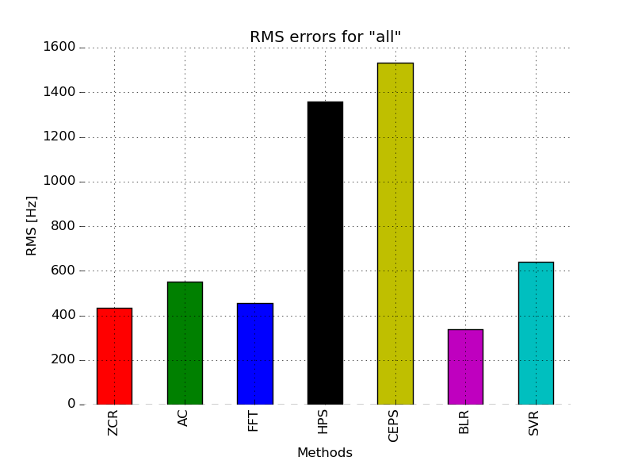
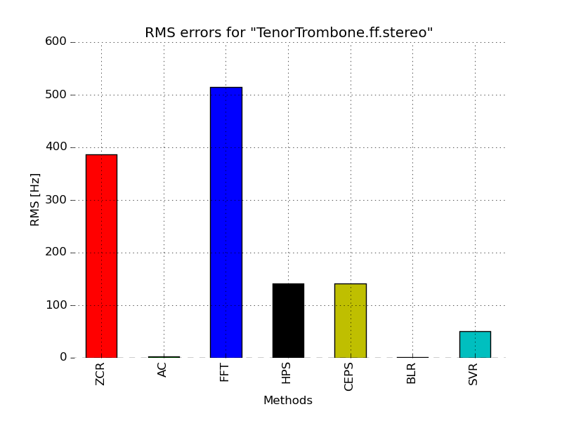
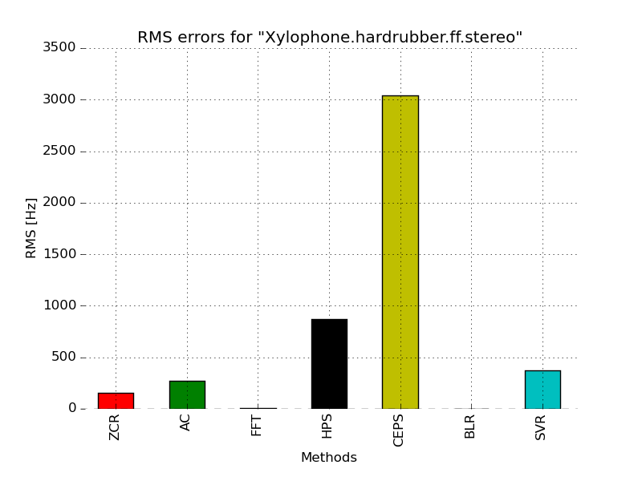
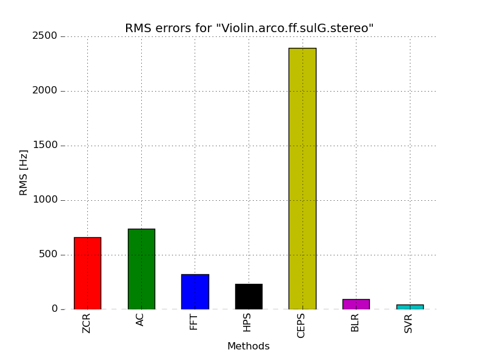
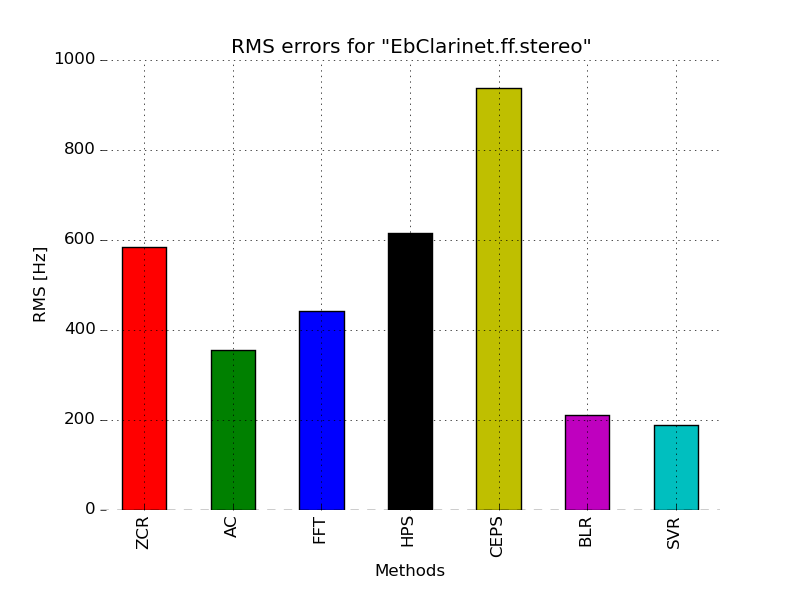
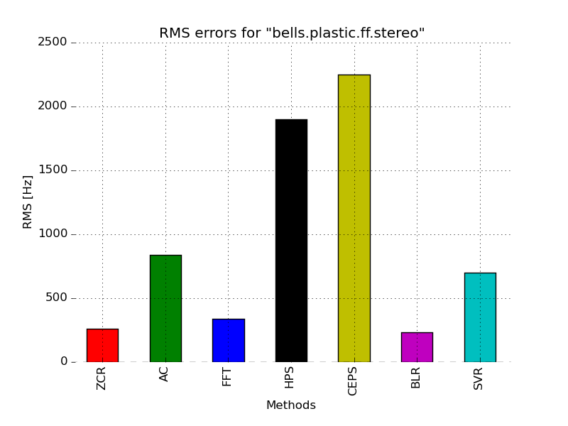
No preprocessing
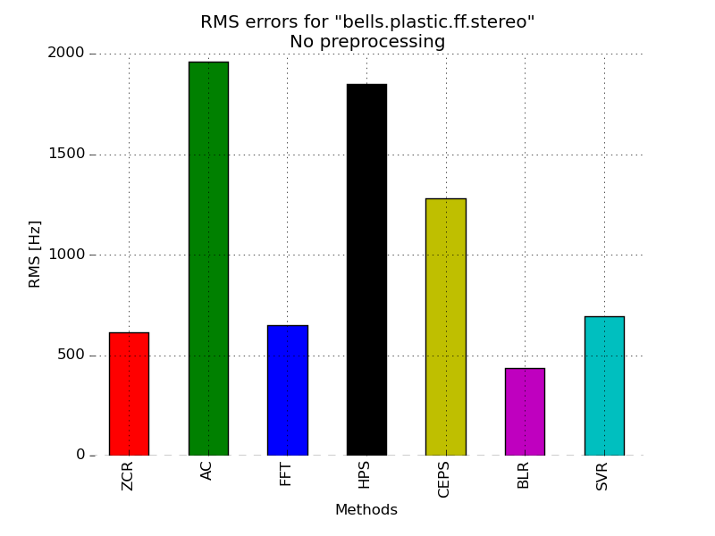
Results and possible improvements
It should be noted that the quality of the methods are all dependent on how well the frequency of the original signal was labelled. Often, many of the algorithms I implemented agreed on a frequency within ~2 Hz of relative error whereas the target frequency was way off. Since there exist no silver bullet estimation method for f0 estimation, generating accurate labels could be bothersome and difficult (i.e. doing it by hand) which is the biggest drawback for the supervised learning method. Gross error might also give a more meaningful estimate of relative error than RMS.
A short glance over the bar graphs suggests that the BLR or SVR methods perform with the least RMS error for all methods except the "bells.plastic.ff.stereo" group of signals. The advantages and disadvantages of the estimation methods are also visible when comparing the graphs. For the signal groups which have most of their energy in the fundamental frequency such as "bells.plastic.ff.stereo" and "Xylophone.hardrubber.ff.stereo" which can be though of as simply exponentially decaying sinusoids (see "bells.plastic.ff.A5.stereo.wav" wavefrom graph).
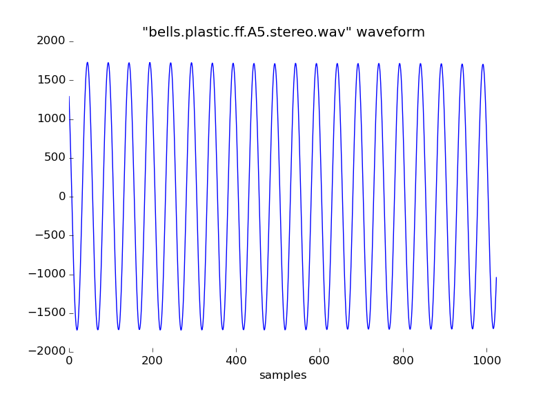
The group of signals where the time-domain methods tend to do well all have waveform that have very clear zero-crossings, such as is the case in the "TenorTrombone.ff.A3.stereo.wav" waveform. It came as no surprise that when a group of signals that don't have complex spectra but most of the energy contained in the fundamental frequency both HPS and CEPS methods perform much worse than for signals with complex frequency spectra.
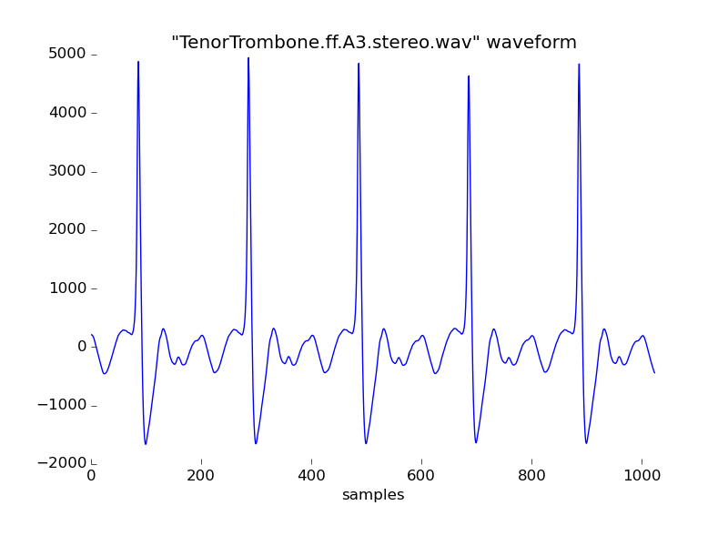
The regression methods I used are only two of a myriad of methods that exist within the vast field of supervised learning. It would be very interesting to do more research on the methods that exists such as random forest. It would also be interesting to experiment with other feature spaces, not just the output of the f0 estimators. An example could be the number of zero crossings per M samples.
References
[1] D. Gerhard. Pitch Extraction and Fundamental Frequency: History and Current Techniques, technical report, Dept. of Computer Science, University of Regina, 2003.
[2] G. Middleton. Pitch Detection Algorithms, online resource from Connexions. Downloaded from [http://cnx.org/contents/i5AAkZCP@2/Pitch-Detection-Algorithms](http://cnx.org/contents/i5AAkZCP@2/Pitch-Detection-Algorithms) on December 10th 2015.
[3] Scikit-learn: Machine Learning in Python, Pedregosa et al., JMLR 12, pp. 2825-2830, 2011.
[4] P. Cuadra. Pitch Detection Methods Review. Downloaded from https://ccrma.stanford.edu/~pdelac/154/m154paper.htm on December 11th 2015.
[5] S. Brown. General Acoustics - Frequency Range of Vocals and Musical Instruments. Downloaded from http://www.listenhear.co.uk/general_acoustics.htm on December 16th 2015.
[6] Hajime Sano and B. Keith Jenkins. A neural network model for pitch perception. *Computer Music Journal*, 13(3):41-48, Fall 1989
[7] A. de Cheveigné and H. Kawahara. YIN, a fundamental frequency estimator for speech and music. *The Journal of the Acoustical Society of America*, 111:1917, 2002.
[8] S. Kraft, U. Zölzer. Polyphonic Pitch Detection by Iterative Analysis of the Autocorrelation Function. *DAFx-14, Erlangen, Germany, September 1-5, 2014*.
[9] R. Toy, R. Kailath. ESPRIT - Estimation of Signal Parameters Via Rotational Invariance Techniques. *IEEE Transactions of Acoustics, Speech and Signal Processing. Vol. 37, No. 7, July 1989*.
[10] Wikipedia contributors. "Supervised learning". Wikipedia, The Free Encyclopedia. Wikipedia, The Free Encyclopedia, 28 Oct. 2015. Web. 17 Dec. 2015.
[11] A. Röbel. Fundamental frequency estimation. *Summer 2006 lecture on analysis,
modeling and transformation of audio signal*. Downloaded from http://recherche.ircam.fr/anasyn/roebel/amt_audiosignale/VL5.pdf on December 13th 2015.
Appendix A: Frequency and pitch are not the same thing
In fundamental frequency estimation literature there is a common misconception that frequency is the same as pitch. Frequency is defined as the reciprocal of a period and has nothing to do with human perception, which pitch however does. Pitch is how we humans perceive frequency psychoacoustically.